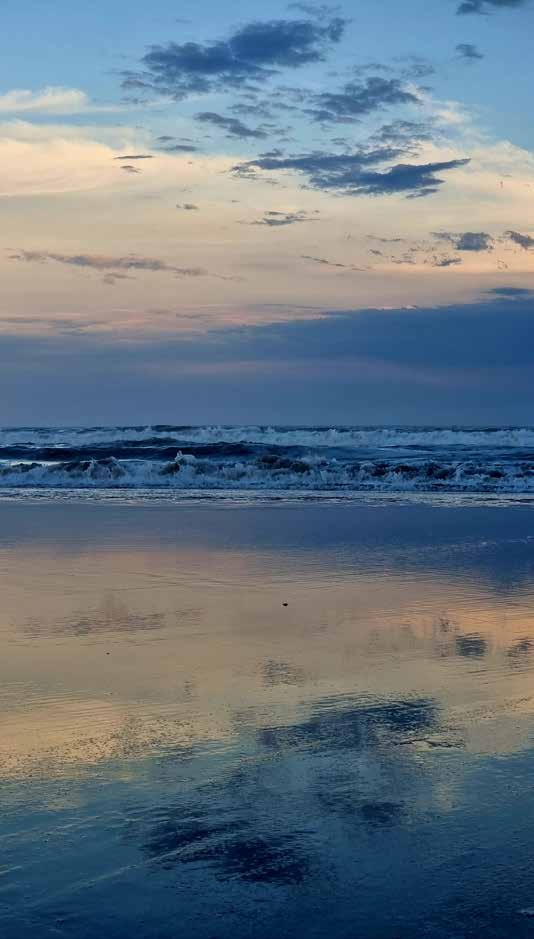
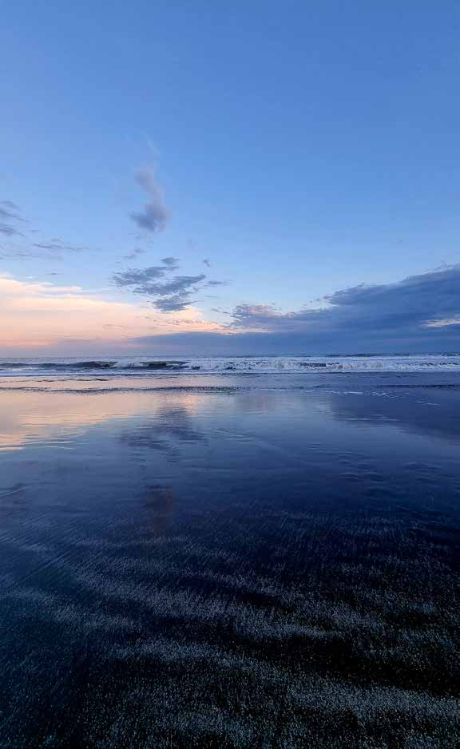

About
I am an artist who transforms spaces, an architect who is inspired through movement, a dancer who draws light in the air when she rises. The canvas is a pentagram, which allows me to listen, perceive and connect with other canvases, other emotions. Art in me is inevitable — it is magic that materialises the human essence, the transforming alchemy of body, spirit and soul.
I am inspired by places I visit, cities near water, the beauty of calm, the nature of simplicity, textures and their depths. I don’t find limits between my perceptions — I think they intertwine, and allow the fluidity I need to create.